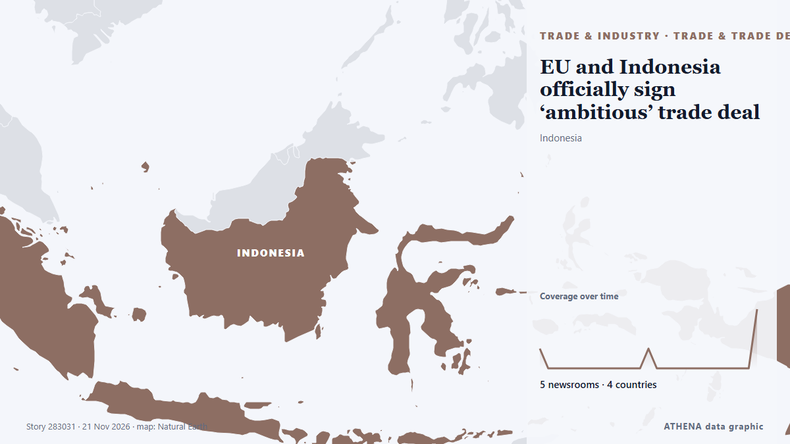

Commerce et accords
SponsoriséPrésenté par  Cybernetics and Artificial Intelligence Lab Welcome to the Cybernetics and Artificial Intelligence Laboratory, established at the Department of Business Administration of the National and Kapodistrian University of Athens. The lab is headed by Professor Dimitrios Thomakos. The lab aims to do research that can be published in top venues. Our research uses tools and methods of Artificial Intelligence, and lies in the following areas: - Forecasting - Decision making - Cyber security - Finance We are always looking forward to collaborating with exceptional students!
Cybernetics and Artificial Intelligence Lab Welcome to the Cybernetics and Artificial Intelligence Laboratory, established at the Department of Business Administration of the National and Kapodistrian University of Athens. The lab is headed by Professor Dimitrios Thomakos. The lab aims to do research that can be published in top venues. Our research uses tools and methods of Artificial Intelligence, and lies in the following areas: - Forecasting - Decision making - Cyber security - Finance We are always looking forward to collaborating with exceptional students!
| 9 nov. | 0 |
|---|---|
| 10 nov. | 0 |
| 11 nov. | 0 |
| 12 nov. | 0 |
| 13 nov. | 0 |
| 14 nov. | 0 |
| 15 nov. | 1 |
| 16 nov. | 0 |
| 17 nov. | 0 |
| 18 nov. | 7 |
| 19 nov. | 6 |
| 20 nov. | 3 |
| 21 nov. | 0 |
| 22 nov. | 0 |
Les titres sont affichés en anglais, tels que publiés.

EU and Indonesia officially sign ‘ambitious’ trade deal
The agreement includes a dedicated protocol on palm oil. de Euractiv
South Korea surpasses US$1 trillion in annual exports, powered by AI
On November 19, South Korea officially surpassed US$1 trillion in annual exports. de DigiTimes Asia
Tajikistan–Afghanistan Border Market Proposed to Boost Trade
Tajikistan has proposed establishing a joint border market with Afghanistan. de The Times of Central Asia
Tinubu vows to end export of unprocessed solid minerals
…Sector generates over N100bn in 2026 — Alake By Gabriel Ewepu ABUJA — President Bola Tinubu on Thursday reaffirmed his administration’s commitment to ending the export of unprocessed solid minerals… de Vanguard
Citi underestimated risky assets by US$35 billion after incorrectly recording trades, sources say
It was using an internal model based on its own statistical assumptions, they add. de The Business Times
India, Italy target €20bn trade by 2029, explore economic corridor l
India and Italy aim to elevate their bilateral trade to €20 billion by 2029, establishing dedicated task forces in both nations to help local businesses tackle bureaucratic hurdles more effectively. de Times of India
(EDITORIAL from The Korea Herald on Nov. 20)
A test can survive a noisy morning and still fail a test of public confidence. de Yonhap (English)
Middle East Conflict Could Cut Global Oil Demand by 4%
The Middle East conflict has caused the biggest disruption ever to global oil and gas trade and could cut world oil demand by more than 4% by 2035 if governments accelerate electrification… de Maritime Professional
China's 15th Five-Year Plan presents opportunities for growth of Asia-Pacific and beyond: Xi
Chinese president urges regional economies to uphold multilateralism, deepen cooperation in AI, digital trade. de Express Tribune
Erbil Approves 5,000 Tons of Feed Exports to Türkiye, Syria
Erbil’s agriculture directorate approved 5,000 tons of feed exports to Türkiye and Syria as the Kurdistan Region’s feed output exceeds domestic demand, officials said. de Kurdistan24 (English)
Seoul hails FTA expansion with China on services, investment as qualitative advance in ties
South Korea's presidential office has welcomed the conclusion of negotiations to expand the bilateral free trade agreement with China to cover services and investment, saying it lays the… de Korea Herald
UnionPay International Debuts Digital Trade Solution at CIIE 2026, Streamlining Cross-Border B2B Settlement for Global E-Commerce
Media OutReach Newswire – 19 November 2026 — UnionPay International (UPI), together with Bank of China and Shanghai E&P International, today officially unveiled its Digital Trade Solution during the… de Laotian Times
Who gets Europe’s scrap? Industry fights over future of waste exports
Recyclers are dependent on export markets while steelmakers need scrap to fuel the green transition. de The Straits Times